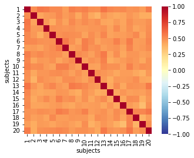
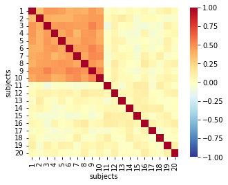
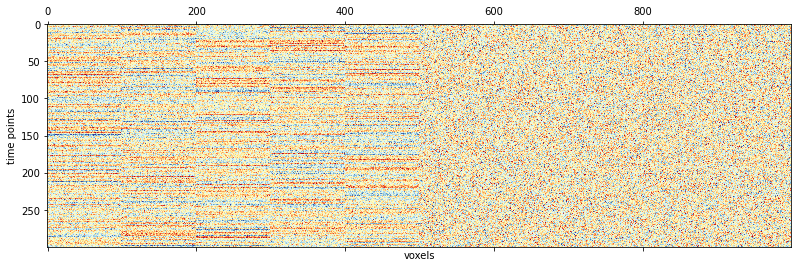
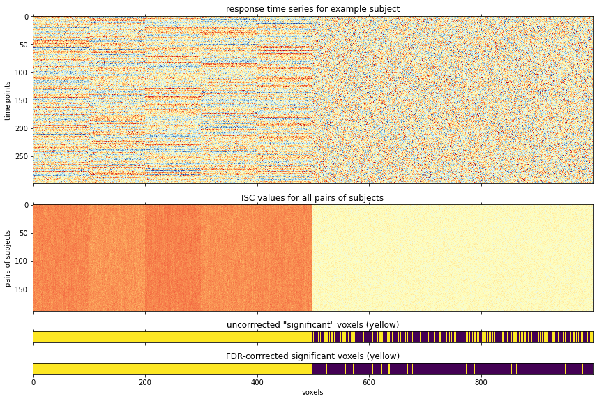
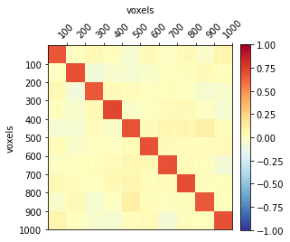
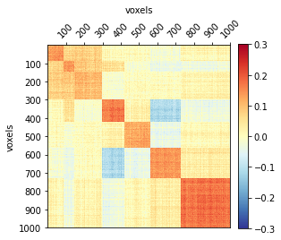

June30, 2022: BrainIAK tutorial
Contents
June30, 2022: BrainIAK tutorial¶
Paper: https://academic.oup.com/scan/article/14/6/667/5489905 Tutorial: https://github.com/snastase/isc-tutorial
from brainiak.isc import (isc, isfc, bootstrap_isc, permutation_isc,
timeshift_isc, phaseshift_isc, compute_summary_statistic)
import numpy as np
import matplotlib.pyplot as plt
import seaborn as sns
from scipy.stats import norm, pearsonr, zscore
from scipy.spatial.distance import squareform
from statsmodels.stats.multitest import multipletests
import nibabel as nib
# toy dataset
n_subjects = 20
n_TRs = 300
n_voxels = 1000
# Create simple simulated data with high intersubject correlation
def simulated_timeseries(n_subjects, n_TRs, n_voxels=1, noise=1):
signal = np.random.randn(n_TRs, n_voxels // 100)
data = [zscore(np.repeat(signal, 100, axis=1) +
np.random.randn(n_TRs, n_voxels) * noise,
axis=0)
for subject in np.arange(n_subjects)]
return data
# List of subject datasets
data = simulated_timeseries(n_subjects, n_TRs, n_voxels=n_voxels)
# Inspect the shape of one of our simulated datasets
print(f"Simulated data shape first subject: {data[0].shape} "
f"\ni.e., {data[0].shape[0]} time points and {data[0].shape[1]} voxels")
# Create a simple visualization of the data
plt.matshow(data[0], cmap='RdYlBu_r', vmin=-3, vmax=3)
plt.grid(False)
plt.xlabel('voxels')
plt.ylabel('time points');
Simulated data shape first subject: (300, 1000)
i.e., 300 time points and 1000 voxels
# ISC analysis
# Get the time series for a single voxel in two subjects
subject_a = data[0][:, 0]
subject_b = data[1][:, 0]
# Check the shape of these mini-datasets
print(f"Subject A, first voxel, shape = {subject_a.shape} "
f"\nSubject B, first voxel, shape = {subject_b.shape}")
# Combine these into a list
both_subjects = [subject_a, subject_b]
# Compute the ISC for this voxel across the two subjects
iscs = isc(both_subjects, pairwise=True)
print(f"ISC for first voxel across subjects A and B = {iscs[0]}")
# NB: even for a single voxel, the output ISC is shaped to
# to accommodate an n_ISCs x n_voxels matrix
print(f"ISC output shape = {iscs.shape}"
f"\ni.e., {iscs.shape[0]} ISC value(s) by {iscs.shape[0]} voxel(s)")
# Check that ISC output matches of other correlation functions in python
numpy_corrcoef = np.corrcoef(subject_a, subject_b)[0, 1]
scipy_pearsonr = pearsonr(subject_a, subject_b)[0]
print(f"BrainIAK ISC = {iscs[0]:.6f}"
f"\nNumpy's correlation = {numpy_corrcoef:.6f}"
f"\nScipy's correlation = {scipy_pearsonr:.6f}")
assert np.isclose(iscs, numpy_corrcoef) and np.isclose(iscs, scipy_pearsonr)
Subject A, first voxel, shape = (300,)
Subject B, first voxel, shape = (300,)
ISC for first voxel across subjects A and B = 0.49804642802182514
ISC output shape = (1,)
i.e., 1 ISC value(s) by 1 voxel(s)
BrainIAK ISC = 0.498046
Numpy's correlation = 0.498046
Scipy's correlation = 0.498046
# Import logging module and set level to INFO
import logging
logging.basicConfig()
logging.getLogger().setLevel(logging.INFO)
# Re-run the previous ISC analyses to see logged info
iscs = isc(both_subjects, pairwise=True)
# Set logging back to default level of WARNING
logging.getLogger().setLevel(logging.WARNING)
INFO:brainiak.utils.utils:Assuming 2 subjects with 300 time points and 1 voxel(s) or ROI(s) for ISC analysis.
INFO:brainiak.isc:Only two subjects! Simply computing Pearson correlation.
INFO:brainiak.isc:ISC computation will tolerate all NaNs when averaging
ISC¶
# Pairwise approach across all subjects and voxels
iscs = isc(data, pairwise=True)
# Check shape of output ISC values
print(f"ISC values shape = {iscs.shape} \ni.e., {iscs.shape[0]} "
f"pairs and {iscs.shape[1]} voxels"
f"\nMinimum ISC = {np.amin(iscs):.3f}; "
f"maximum ISC = {np.amax(iscs):.3f}")
ISC values shape = (190, 1000)
i.e., 190 pairs and 1000 voxels
Minimum ISC = 0.277; maximum ISC = 0.676
# Visualize the correlation matrix for one voxel
isc_matrix = squareform(iscs[:, 0])
np.fill_diagonal(isc_matrix, 1)
sns.heatmap(isc_matrix, cmap="RdYlBu_r", vmin=-1, vmax=1, square=True,
xticklabels=range(1, 21), yticklabels=range(1, 21))
plt.xlabel('subjects')
plt.ylabel('subjects')
plt.show()
# Create noisier data
noisy_data = np.dstack((np.dstack((
simulated_timeseries(n_subjects // 2, n_TRs,
n_voxels=n_voxels, noise=1))),
np.dstack((
simulated_timeseries(n_subjects // 2, n_TRs,
n_voxels=n_voxels, noise=5)))))
# Recompute ISC and visualize data with noisy subjects
noisy_iscs = isc(noisy_data, pairwise=True)
isc_matrix = squareform(noisy_iscs[:, 0])
np.fill_diagonal(isc_matrix, 1)
sns.heatmap(isc_matrix, cmap="RdYlBu_r", vmin=-1, vmax=1, square=True,
xticklabels=range(1, 21), yticklabels=range(1, 21))
plt.xlabel('subjects')
plt.ylabel('subjects')
plt.show()


# Leave-one-out approach
iscs = isc(data, pairwise=False)
# Check shape of output ISC values
print(f"ISC values shape = {iscs.shape} \ni.e., {iscs.shape[0]} "
f"left-out subjects and {iscs.shape[1]} voxel(s)"
f"\nMinimum ISC = {np.amin(iscs):.3f}; "
f"maximum ISC = {np.amax(iscs):.3f}")
ISC values shape = (20, 1000)
i.e., 20 left-out subjects and 1000 voxel(s)
Minimum ISC = 0.553; maximum ISC = 0.794
# Input a list of subjects (same as before)
iscs = isc(data, pairwise=False)
# Stack subjects in 3rd-dimension and recompute ISC
data_stack = np.dstack(data)
print(f"Stacked data shape = {data_stack.shape}"
f"\ni.e., {data_stack.shape[0]} time points, {data_stack.shape[1]} "
f"voxels, and {data_stack.shape[2]} subjects")
# Input stacked numpy array
iscs_from_stack = isc(data_stack, pairwise=False)
# Make sure the ISC outputs are the same
assert np.array_equal(iscs, iscs_from_stack)
Stacked data shape = (300, 1000, 20)
i.e., 300 time points, 1000 voxels, and 20 subjects
# Compute mean leave-one-out ISC
iscs = isc(data, pairwise=False, summary_statistic='mean')
print(f"ISC values shape = {iscs.shape} \ni.e., the mean value across "
f"left-out subjects for {iscs.shape[0]} voxel(s)"
f"\nMean ISC for first voxel = {iscs[0]:.3f}")
# Compute median leave-one-out ISC
iscs = isc(data, pairwise=False, summary_statistic='median')
print(f"ISC values shape = {iscs.shape} \ni.e., the median value across "
f"left-out subjects for {iscs.shape[0]} voxel(s)"
f"\nMedian ISC for first voxel = {iscs[0]:.3f}")
ISC values shape = (1000,)
i.e., the mean value across left-out subjects for 1000 voxel(s)
Mean ISC for first voxel = 0.667
ISC values shape = (1000,)
i.e., the median value across left-out subjects for 1000 voxel(s)
Median ISC for first voxel = 0.665
Statistics on ISC¶
# Phase randomization using pairwise approach (takes a couple minutes)
observed, p, distribution = phaseshift_isc(data, pairwise=True,
summary_statistic='median',
n_shifts=200)
# Inspect shape of null distribution
print(f"Null distribution shape = {distribution.shape}"
f"\ni.e., {distribution.shape[0]} randomizations "
f"and {distribution.shape[1]} voxels")
# Get actual ISC value and p-value for first voxel
print(f"Actual observed ISC value for first voxel = {observed[0]:.3f},"
f"\np-value from randomization test = {p[0]:.3f}")
Null distribution shape = (200, 1000)
i.e., 200 randomizations and 1000 voxels
Actual observed ISC value for first voxel = 0.470,
p-value from randomization test = 0.005
# Circular time-shift using pairwise approach (takes a couple minutes)
observed, p, distribution = timeshift_isc(data, pairwise=True,
summary_statistic='median',
n_shifts=200)
# Inspect shape of null distribution
print(f"Null distribution shape = {distribution.shape}"
f"\ni.e., {distribution.shape[0]} randomizations "
f"and {distribution.shape[1]} voxels")
# Get actual ISC value and p-value for first voxel
print(f"Actual observed ISC value for first voxel = {observed[0]:.3f},"
f"\np-value from randomization test = {p[0]:.3f}")
Null distribution shape = (200, 1000)
i.e., 200 randomizations and 1000 voxels
Actual observed ISC value for first voxel = 0.470,
p-value from randomization test = 0.005
# Compute ISCs and then run bootstrap hypothesis test on ISCs
iscs = isc(data, pairwise=True, summary_statistic=None)
observed, ci, p, distribution = bootstrap_isc(iscs, pairwise=True,
ci_percentile=95,
summary_statistic='median',
n_bootstraps=200)
# Inspect shape of null distribution
print(f"Null distribution shape = {distribution.shape}"
f"\ni.e., {distribution.shape[0]} bootstraps "
f"and {distribution.shape[1]} voxels")
# Get actual ISC value and p-value for first voxel
print(f"Actual observed ISC value for first voxel = {observed[0]:.3f},"
f"\np-value from bootstrap hypothesis test = {p[0]:.3f}")
Null distribution shape = (200, 1000)
i.e., 200 bootstraps and 1000 voxels
Actual observed ISC value for first voxel = 0.470,
p-value from bootstrap hypothesis test = 0.005
# Compute ISCs and then run one-sample permutation test on ISCs
iscs = isc(data, pairwise=True, summary_statistic=None)
observed, p, distribution = permutation_isc(iscs, pairwise=True,
summary_statistic='median',
n_permutations=200)
# Inspect shape of null distribution
print(f"Null distribution shape = {distribution.shape}"
f"\ni.e., {distribution.shape[0]} permutations "
f"and {distribution.shape[1]} voxels")
# Get actual ISC value and p-value for first voxel
print(f"Actual observed ISC value for first voxel = {observed[0][0]:.3f},"
f"\np-value from permutation test = {p[0]:.3f}")
Null distribution shape = (200, 1000)
i.e., 200 permutations and 1000 voxels
Actual observed ISC value for first voxel = 0.470,
p-value from permutation test = 0.005
# Note that with few subjects, an exact test is performed
data_n6 = data[:6]
iscs = isc(data_n6, pairwise=True, summary_statistic=None)
observed, p, distribution = permutation_isc(iscs, pairwise=True,
summary_statistic='median',
n_permutations=200)
# Create data with noisy subset of subjects
noisy_data = np.dstack((np.dstack((
simulated_timeseries(n_subjects // 2, n_TRs,
n_voxels=n_voxels, noise=1))),
np.dstack((
simulated_timeseries(n_subjects // 2, n_TRs,
n_voxels=n_voxels, noise=5)))))
# Create group_assignment variable with group labels
group_assignment = [1]*10 + [2]*10
print(f"Group assignments: \n{group_assignment}")
# Compute ISCs and then run two-sample permutation test on ISCs
iscs = isc(noisy_data, pairwise=True, summary_statistic=None)
observed, p, distribution = permutation_isc(iscs,
group_assignment=group_assignment,
pairwise=True,
summary_statistic='median',
n_permutations=200)
Group assignments:
[1, 1, 1, 1, 1, 1, 1, 1, 1, 1, 2, 2, 2, 2, 2, 2, 2, 2, 2, 2]
# Inspect shape of null distribution
print(f"Null distribution shape = {distribution.shape}"
f"\ni.e., {distribution.shape[0]} permutations "
f"and {distribution.shape[1]} voxels")
# Get actual ISC value and p-value for first voxel
print(f"Actual observed group difference in ISC values "
f"for first voxel = {observed[0]:.3f},"
f"\np-value from permutation test = {p[0]:.3f}")
Null distribution shape = (200, 1000)
i.e., 200 permutations and 1000 voxels
Actual observed group difference in ISC values for first voxel = 0.428,
p-value from permutation test = 0.005
# Create data with where half of voxels are noisy
noisy_data = np.hstack((np.dstack((
simulated_timeseries(n_subjects, n_TRs,
n_voxels=n_voxels // 2, noise=1))),
np.dstack((
simulated_timeseries(n_subjects, n_TRs,
n_voxels=n_voxels // 2, noise=9)))))
# Visualize data for first subject where half of voxels are noisy
plt.matshow(noisy_data[..., 0], cmap='RdYlBu_r', vmin=-3, vmax=3)
plt.grid(False)
plt.xlabel('voxels')
plt.ylabel('time points');

# Compute ISCs and then run bootstrap hypothesis test on ISCs
# using a realistic number of permutations (takes a few minutes)
iscs = isc(noisy_data, pairwise=True, summary_statistic=None)
observed, ci, p, distribution = bootstrap_isc(iscs, pairwise=True,
ci_percentile=95,
summary_statistic='median',
n_bootstraps=1000)
# Get q-values (i.e., FDR-controlled p-values) using statsmodels
q = multipletests(p, method='fdr_by')[1]
# We can also convert these q-values to z-values
z = np.abs(norm.ppf(q))
# Also get significant voxels with and without correction
corrected = q[np.newaxis, :] < .05
uncorrected = p[np.newaxis, :] < .05
# Count significant voxels before and after correction
print(f'{np.sum(uncorrected)} "significant" voxels before correction for '
f"multiple tests; {np.sum(corrected)} significant voxels after "
f"controlling FDR at .05")
678 "significant" voxels before correction for multiple tests; 528 significant voxels after controlling FDR at .05
# Set up grid of subplots for visualizing voxel values and significance
fig, (ax0, ax1, ax2, ax3) = plt.subplots(nrows=4, figsize=(12, 8),
sharex=True,
gridspec_kw={'height_ratios':
[300, 190, 20, 20]})
# Visualize data for first subject where half of voxels are noisy
ax0.matshow(noisy_data[..., 0], cmap='RdYlBu_r', vmin=-3, vmax=3)
ax0.grid(False)
ax0.set_ylabel('time points')
ax0.set_title('response time series for example subject', y=1)
# Visualize ISC values across all pairs of subjects
ax1.matshow(iscs, cmap='RdYlBu_r', vmin=-1, vmax=1)
ax1.grid(False)
ax1.set_ylabel('pairs of subjects')
ax1.set_title('ISC values for all pairs of subjects', y=1)
# Visualize uncorrected and corrected significant voxels
ax2.matshow(np.repeat(uncorrected, 20, axis=0),
cmap='viridis',vmin=0, vmax=1)
ax2.grid(False)
ax2.set_yticks([])
ax2.set_title('uncorrrected "significant" voxels (yellow)')
ax3.matshow(np.repeat(corrected, 20, axis=0),
cmap='viridis',vmin=0, vmax=1)
ax3.grid(False)
ax3.set_xlabel('voxels')
ax3.xaxis.tick_bottom()
ax3.set_yticks([])
ax3.set_title('FDR-corrrected significant voxels (yellow)')
plt.tight_layout()

ISFC¶
# Compute ISFCs using leave-one-out approach
isfcs, iscs = isfc(data, pairwise=False, vectorize_isfcs=True)
# Check shape of output ISFC values
print(f"ISFC output shape = {isfcs.shape}\ni.e., {isfcs.shape[0]} "
f"left-out subjects by {isfcs.shape[1]} connections (i.e., voxel pairs)"
f"\nISCs output shape = {iscs.shape}\ni.e., {iscs.shape[0]} "
f"left-out subjects by {iscs.shape[1]} voxels")
ISFC output shape = (20, 499500)
i.e., 20 left-out subjects by 499500 connections (i.e., voxel pairs)
ISCs output shape = (20, 1000)
i.e., 20 left-out subjects by 1000 voxels
# Compute ISFCs using leave-one-out approach
isfcs = isfc(data, pairwise=False, vectorize_isfcs=False)
# Check shape of output ISFC values
print(f"ISFC output shape = {isfcs.shape}\ni.e., {isfcs.shape[0]} "
f"left-out subjects by {isfcs.shape[1]} voxels by {isfcs.shape[2]} "
"voxels")
ISFC output shape = (20, 1000, 1000)
i.e., 20 left-out subjects by 1000 voxels by 1000 voxels
# Compute ISFCs using leave-one-out approach with mean
isfcs, iscs = isfc(data, pairwise=False, summary_statistic='mean',
vectorize_isfcs=True)
# Check shape of output ISFC values
print(f"Mean ISFC output shape = {isfcs.shape}\ni.e., {isfcs.shape[0]} "
f"connections (i.e., voxel pairs)"
f"\nMean ISC output shape = {iscs.shape}\ni.e., {iscs.shape[0]} "
"voxels")
Mean ISFC output shape = (499500,)
i.e., 499500 connections (i.e., voxel pairs)
Mean ISC output shape = (1000,)
i.e., 1000 voxels
from brainiak.isc import squareform_isfc
# Start with square (redundant) ISFCs and check shape
isfcs_sq = isfc(data, pairwise=False, vectorize_isfcs=False)
print(f"Square (redundant) ISFCs shape: {isfcs_sq.shape}")
# Convert these directly to condensed ISFCs (and ISCs)
isfcs_c, iscs = squareform_isfc(isfcs_sq)
print(f"Condensed ISFCs shape: {isfcs_c.shape}, "
f"ISCs shape: {iscs.shape}")
# Convert these directly back to redundant ISFCs
isfcs_r = squareform_isfc(isfcs_c, iscs)
print(f"Converted redundant ISFCs shape: {isfcs_r.shape}")
# Check that they are identical to the original square ISFCs
assert np.array_equal(isfcs_sq, isfcs_r)
Square (redundant) ISFCs shape: (20, 1000, 1000)
Condensed ISFCs shape: (20, 499500), ISCs shape: (20, 1000)
Converted redundant ISFCs shape: (20, 1000, 1000)
# Get ISC values directly from ISFC matrix
isfcs, iscs = isfc(data, pairwise=False, vectorize_isfcs=True)
# Check that these are the same as conventional ISCs
assert np.allclose(iscs, isc(data))
# Recompute mean ISFCs
isfcs, iscs = isfc(data, pairwise=False, summary_statistic='mean',
vectorize_isfcs=True)
# Convert these to a square representation
isfcs = squareform_isfc(isfcs, iscs)
# Visual mean ISFC matrix
plt.matshow(isfcs, cmap="RdYlBu_r", vmin=-1, vmax=1)
plt.grid(False)
plt.xticks(np.arange(0, 1001, 100)[1:], np.arange(100, 1001, 100),
rotation=45)
plt.gca().xaxis.tick_top()
plt.gca().xaxis.set_label_position('top')
plt.yticks(np.arange(0, 1001, 100)[1:], np.arange(100, 1001, 100))
plt.xlabel('voxels')
plt.ylabel('voxels')
ax = plt.gca()
plt.colorbar(fraction=0.046, pad=0.04);

# Create more structured simulated data with 7 "networks";
# don't worry about the details
from scipy.ndimage import gaussian_filter1d
def structured_timeseries(n_subjects, n_TRs, n_voxels=1000, noise=1):
signals = np.random.randn(n_TRs, 3)
networks = np.column_stack((signals + np.random.randn(n_TRs, 3) * noise,
signals[:, 0] + np.random.randn(n_TRs) * noise,
signals[:, 0] + np.random.randn(n_TRs) * noise,
-signals[:, 2] + np.random.randn(n_TRs) * noise,
signals[:, 2] + np.random.randn(n_TRs) * noise))
networks = networks[:, [0, 3, 4, 5, 1, 2, 6]]
six = np.random.randint(n_voxels // 20, n_voxels // 6, 6)
seven = np.append(six, (n_voxels - np.sum(six)))
voxels = np.column_stack([np.tile(network[:, np.newaxis], (1, extent))
for network, extent in zip(networks.T, seven)])
areas = [0] + sorted(np.random.randint(0, 1000, 16))
areas = np.diff(areas).tolist() + [(1000 - areas[-1])]
noise_sources = np.random.randn(n_TRs, 7)
structured_noise = np.column_stack([np.tile(
(noise_sources[:, np.random.choice(range(7))] *
np.random.choice([-1, 1, 1, 1]))[:, np.newaxis],
(1, extent))
for extent in areas])
voxels = gaussian_filter1d(voxels, 8.0, axis=0)
structured_noise = gaussian_filter1d(structured_noise, 8.0, axis=0)
data = []
for s in np.arange(n_subjects):
data.append(voxels + structured_noise * noise * .2 +
np.random.randn(n_TRs, n_voxels) * noise * 1.35)
data = np.dstack(data)
return data
structured_data = structured_timeseries(n_subjects, n_TRs)
# Compute ISFCs using leave-one-out approach with mean
isfcs, iscs = isfc(structured_data, pairwise=False, summary_statistic='mean',
vectorize_isfcs=True)
# Convert these to a square representation
isfcs = squareform_isfc(isfcs, iscs)
# Visual mean ISFC matrix
plt.matshow(isfcs, cmap="RdYlBu_r", vmin=-.3, vmax=.3)
plt.grid(False)
plt.xticks(np.arange(0, 1001, 100)[1:], np.arange(100, 1001, 100),
rotation=45)
plt.gca().xaxis.tick_top()
plt.gca().xaxis.set_label_position('top')
plt.yticks(np.arange(0, 1001, 100)[1:], np.arange(100, 1001, 100))
plt.xlabel('voxels')
plt.ylabel('voxels')
ax = plt.gca()
plt.colorbar(fraction=0.046, pad=0.04);
